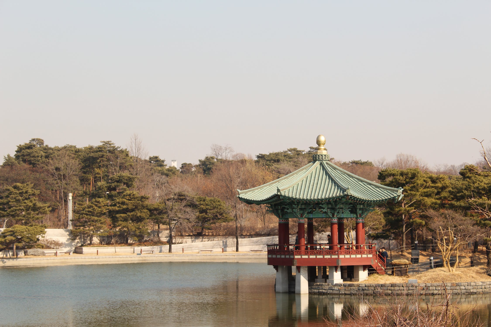
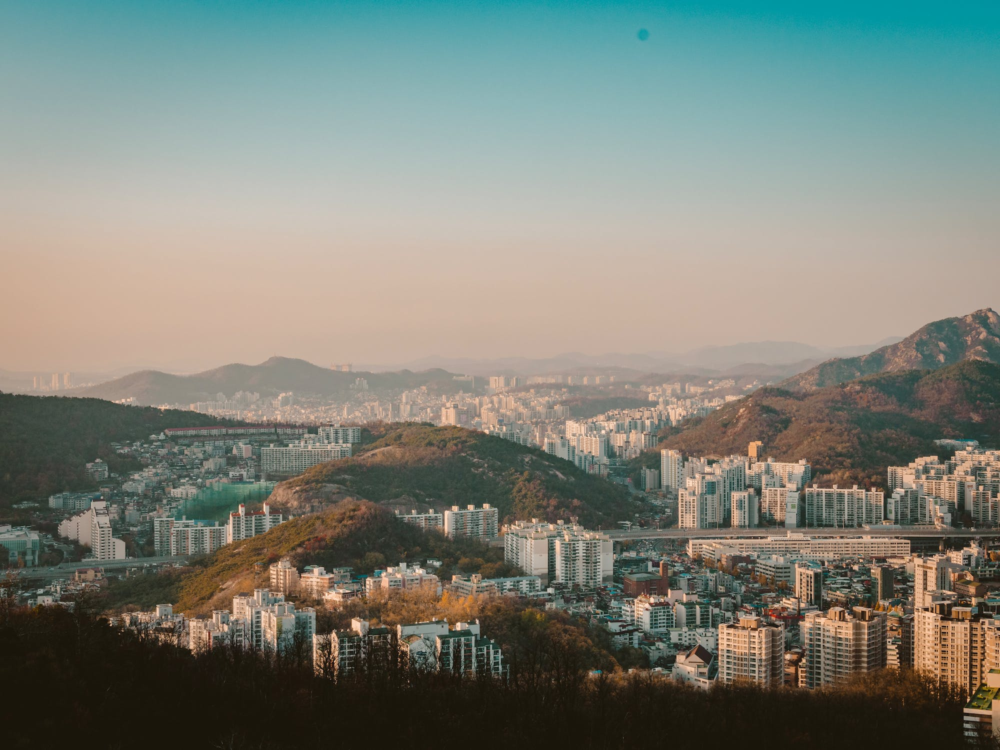
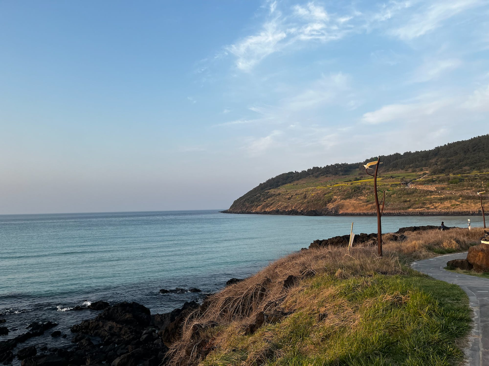
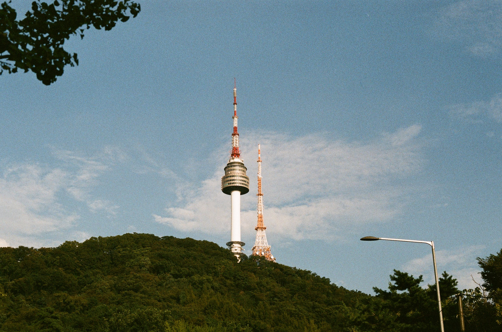
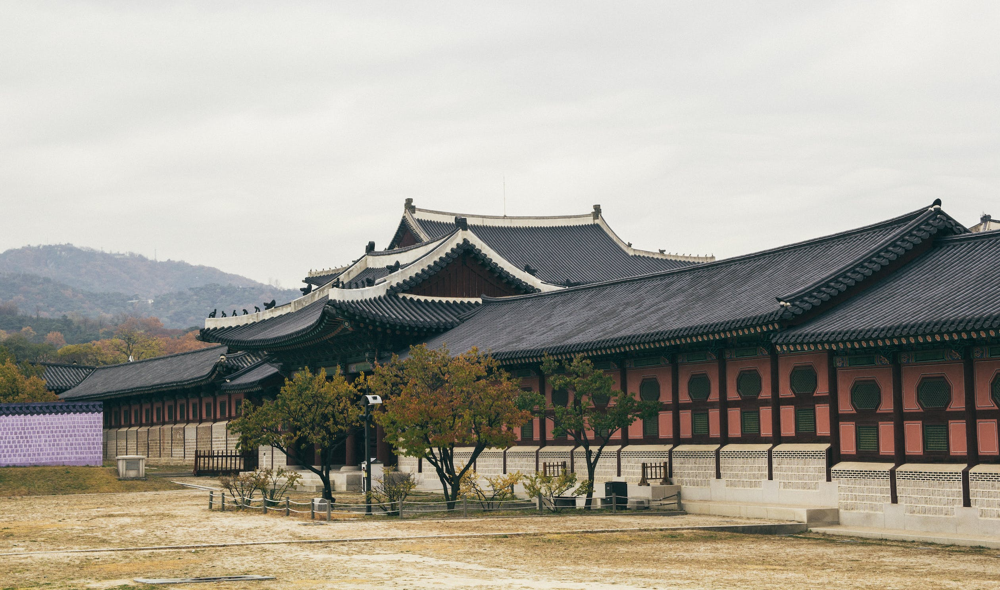
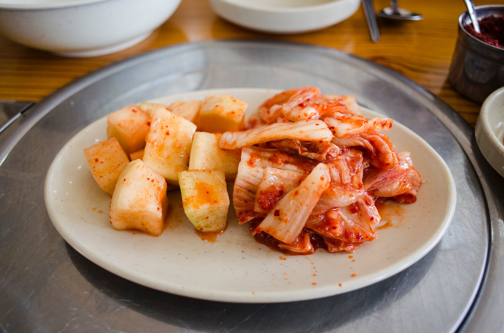
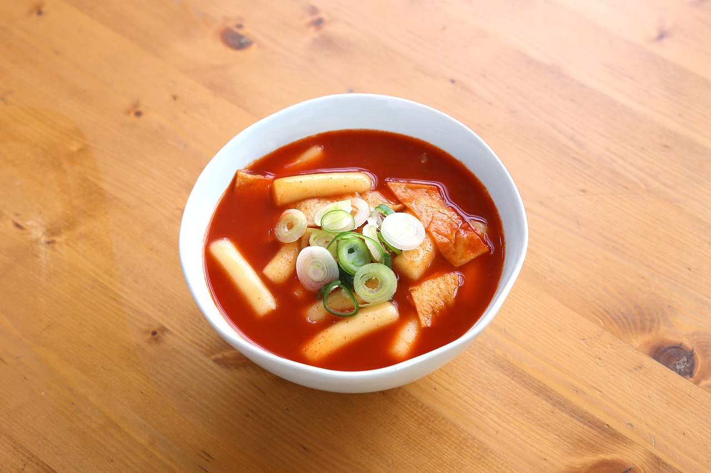
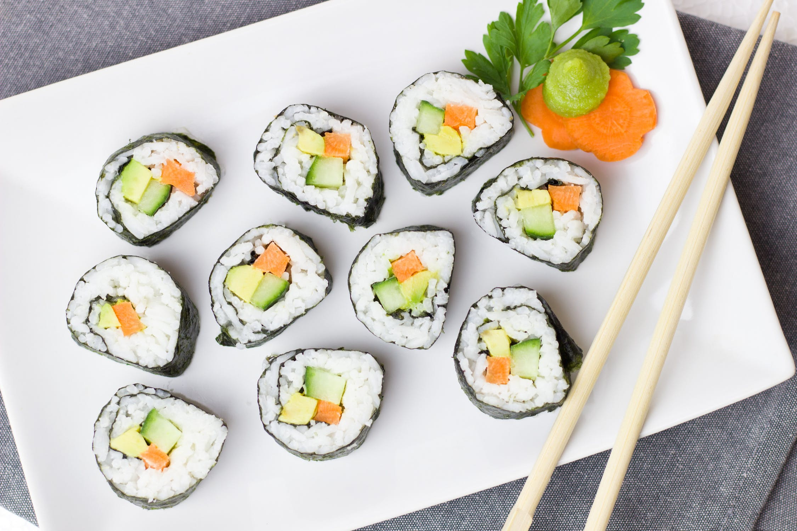

Sejarah

Korea dimulai dengan pembentukan Joseon (atau lebih sering disebut dengan Gojoseon untuk menghindari persamaan nama dengan Dinasti Joseon pada abad ke 14)
pada 2333 SM oleh Dangun. Gojoseon berkembang hingga bagian utara Korea dan Manchuria. Setelah beberapa kali berperang dengan Dinasti Han Gojoseon mulai
mengalami disintegrasi. Dinasti Buyeo, Okjeo, Dongye dan konfederasi Samhan menduduki Semenanjung Korea dan Manchuria Selatan. Goguryeo, Baekje, and Silla
berkembang mengatur Tanjung Korea yang dikenal dengan Tiga Kerajaan Korea. Untuk pertama kalinya Semenanjung Korea berhasil disatukan oleh Silla pada tahun
676 menjadi Silla Bersatu. Para pelarian Goguryeo yang selamat mendirikan sebuah kerajaan lain di sisi timur laut semenanjung Korea, yakni Balhae. Hubungan
antara Korea dan China berjalan dengan baik pada masa Dinasti Silla. Kerajaan ini runtuh akibat adanya kerusuhan dan konflik yang terjadi di dalam negeri pada
abad ke 10, Kerajaan Silla jatuh dan menyerah kepada dinasti Goryeo pada tahun 935. Silla Bersatu akhirnya runtuh di akhir abad ke-9, yang juga mengakhiri
masa kekuasaan Tiga Kerajaan. Kerajaan yang baru, Goryeo, mulai mendominasi Semenanjung Korea. Kerajaan Balhae runtuh tahun 926 karena serangan bangsa Khitan
dan sebagian besar penduduk serta pemimpinnya, Dae Gwang hyun, mengungsi ke Dinasti Goryeo. Tahun 993 sampai 1019 suku Khitan dari Dinasti Liao meyerbu Goryeo,
tetapi berhasil dipukul mundur. Kemudian pada tahun 1238, Goryeo kembali diserbu pasukan Mongol dan setelah mengalami perang hampir 30 tahun, dua pihak akhirnya
melakukan perjanjian damai.
Pada tahun 1392, Taejo dari Joseon mendirikan Dinasti Joseon setelah menumbangkan Goryeo. Raja Sejong (1418–1450) mengumumkan penciptaan abjad Hangeul.
Antara 1592–1598, dalam Perang Imjin, Jepang menginvasi Semenanjung Korea, tetapi dapat dipatahkan oleh prajurit pimpinan Admiral Yi Sun-shin. Lalu
pada tahun 1620-an sampai 1630-an Dinasti Joseon kembali menderita serangan dari (Dinasti Qing). Pada awal tahun 1870-an, Jepang kembali berusaha merebut
Korea yang berada dalam pengaruh Tiongkok. Pada tahun 1895, Maharani Myeongseong dibunuh oleh mata-mata Jepang. Pada tahun 1905, Jepang memaksa Korea
untuk menandatangani Perjanjian Eulsa yang menjadikan Korea sebagai protektorat Jepang dan pada 1910 Jepang mulai menjajah Korea. Perjuangan rakyat Korea
terhadap penjajahan Jepang dimanifestasikan dalam Pergerakan 1 Maret dengan tanpa kekerasan. Pergerakan kemerdekaan Korea yang dilakukan Pemerintahan
Sementara Republik Korea lebih banyak aktif di luar Korea seperti di Manchuria, Tiongkok dan Siberia. Dengan menyerahnya Jepang pada tahun 1945, PBB
membuat rencana administrasi bersama Uni Soviet dan Amerika Serikat, namun rencana tersebut tidak terlaksana. Pada tahun 1948, pemerintahan baru terbentuk:
Korea demokratik (Korea Selatan) dan komunis (Korea Utara) yang dibagi oleh garis lintang 38 derajat. Pada 1950, Korea Utara menginvasi Korea Selatan yang
dikenal dengan nama Perang Korea.
Geografis

Luas Korea Selatan adalah 100.339 km2, lebih kecil dibanding Korea Utara. Keadaan topografinya sebagian besar berbukit dan tidak rata. Pegunungan di wilayah
timur umumnya menjadi hulu sungai-sungai besar, seperti sungai Han dan sungai Naktong. Sementara wilayah barat merupakan bagian rendah yang terdiri dari daratan pantai
yang berlumpur. Di wilayah barat dan selatan yang terdapat banyak teluk terdapat banyak pelabuhan yang baik seperti Incheon, Yeosu, Gimhae, dan Busan. Korea Selatan memiliki
sekitar 3.000 pulau, sebagian besar adalah pulau kecil dan tidak berpenghuni. Pulau - pulau ini tersebar dari barat hingga selatan Korea Selatan. Pulau Jeju yang terletak
sekitar 100 kilometer di bagian selatan Korea Selatan adalah pulau terbesar dengan luas area 1.845 km2. Gunung Halla adalah gunung berapi tertinggi sekaligus sebagai titik
tertinggi di Korea Selatan yang terletak di Pulau Jeju. Pulau yang terletak di wilayah paling timur Korea Selatan adalah Uileungdo dan Batu Liancourt sementara Marado dan
Batu Socotra merupakan pulau yang berada paling selatan di wilayah Korea Selatan.
Iklim Korea selatan dipengaruhi oleh iklim dari daratan Asia dan memiliki 4 musim. Musim panas di Korea selatan yang dimulai bulan Juni bisa mencapai temperatur 40 derajat
celcius (di kota Daegu), yang ditandai dengan datangnya musim hujan yang jatuh pada akhir bulan Juli sampai Agustus di seluruh bagian semenanjung. Sementara temperatur musim
dinginnya rata-rata dapat jatuh pada suhu sejauh minus 10 derajat celcius di beberapa provinsi. Korea Selatan juga rentan akan serangan angin taifun yang menerjang selama
bulan musim panas dan musim gugur. Beberapa tahun belakangan ini Korea selatan juga sering dilanda badai pasir kuning yang dibawa dari Gurun Gobi di Tiongkok yang juga melanda
Jepang dan sejauh Amerika Serikat.
Wisata
Negara Korea Selatan sendiri memang menjadi pusat perhatian dunia beberapa tahun belakangan ini karena mereka berhasil memperkenalkan budaya mereka ke seluruh dunia.
Korea merupakan salah satu negara yang sangat menjaga dan melestarikan warisan budaya mereka. Situs-situs budaya Korea dijaga dengan sebaik mungkin oleh masyarakat dan
pemerintah untuk dijadikan sebagai objek wisata.
Jeju Island

Pulau yang sering disebut sebagai Hawainya Korea Selatan ini memiliki keindahan alam yang eksotik dan sering menjadi tempat tujuan bulan madu bagi warga lokal dan wisatawan.
Di pulau Jeju terdapat gunung merapi tertua dan tertinggi di Korea Selatan, gunung Hallasan sering menjadi tempat pendakian bagi warga lokal dan wisatawan karena keindahan alamnya.
Bagi anda penyuka seafood pasti anda akan menyukai berkunjung ke pulau Jeju karena disini terkenal dengan banyaknya restoran seafood yang memilki rasa yang nikmat.
Jeju juga menjadi lokasi beberapa cafe terkenal salah satunya dari penyanyi terkenal G-dragon dan juga ada salah satu taman bermain yang terkenal di Korea yaitu Shinhwa Theme Park.
Namsan Tower

Menara Namsan yang menjadi landmark kota Seoul ini mempunyai daya tarik bagi kalangan anak muda karena di menara ini ada banyak gembok cinta berwarna-warni dengan berbagai bentuk
yang sengaja digantung oleh pasangan anak muda. Di menara ini terdapat toko, museum dan restoran yang bisa anda kunjungi. Pemandangan menara Namsan ini sangatlah indah saat malam hari.
Gyeongbokgung Palace

Terletak di jantung kota Seoul, istana Gyeongbokgung ini adalah istana terbesar yang ada di Korea Selatan. Dibangun pada tahun 1395 istana ini dulunya digunakan untuk tempat tinggal raja,
ratu dan para selir. Anda dapat mengikuti tur mengelilingi kompleks istana Gyeongbokgung untuk melihat keindahan struktur bangunan dan taman yang terdapat di istana ini. Disekitar istana
ini juga terdapat banyak tempat penyewaan baju Hanbok atau baju traditional Korea yang dapat anda pakai untuk berfoto-foto di istana Gyeongbokgung.
Makanan Khas
Selain wisata, tren makanan khas Korea tengah berkembang begitu pesat tanpa terkecuali. Makanan khas Korea adalah salah satu yang paling sehat di dunia, dengan penekanan pada sayuran,
daging yang dimasak sederhana dan tanpa banyak minyak. Menariknya dalam drama dan segala program acara yang disiarkan dari tv Korea Selatan semuanya menyelipkan budaya, makanan khas dan
semua hal yang berkaitan dengan Korea Selatan sehingga akhirnya para penikmat acara hiburan dari Korea Selatan bisa jatuh cinta dengan semua hal yang berkaitan dengan Korea Selatan.
Kimchi

Salah satu makanan korea ini merupakan sayuran yang difermentasi dengan bumbu khas sehingga menghasilkan rasa yang pedas dan asam. Bagi masyarakat Korea, rasanya kurang sempurna jika
saat makan tidak ada kimchi. Karena merupakan makanan yang difermentasikan, maka dari itu tentu makanan ini sangat tahan lama.
Tteokbokki

Tteokbokki adalah makanan berbahan kue beras dengan kuah kental yang pedas. Biasanya, tteokbokki disajikan di pinggan besar bersama dengan telur rebus, fish cake, serta aneka sayuran
dan bawang bombay.
Kimbab

Nasi yang digulung dengan gim atau rumput laut kering yang di dalamnya berisi sayuran seperti wortel, bayam, timun, kemudian telur
dan daging itu disebut dengan kimbab.